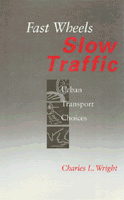

How transport modes can be combined to produce affordable and environmentally sound solutions
How transport modes can be combined to produce affordable and environmentally sound solutions


 How transport modes can be combined to produce affordable and environmentally sound solutions
How transport modes can be combined to produce affordable and environmentally sound solutions

|  |
Fast Wheels, Slow TrafficCharles L. Wrightcloth EAN: 978-0-87722-911-7 (ISBN: 0-87722-911-2) |
Fast Wheels, Slow Traffic shows how the characteristics of modes of transportation can be combined to produce affordable, environmentally sound solutions to urban transport problems—solutions tailored to meet the demands of cities with radically different economies and transportation needs. With provocative and often entertaining examples, Charles Wright elucidates the problems endemic to urban transportation systems and the faculty analysis endemic to urban planning.
In examining the traits of various transport modes, Wright builds a case that favors busses over cars or railway systems. All manner of conveyances studied, including walking and cycling, and practical examples are drawn from both the United States and abroad. One such example is Brasília, the modernistic Brazilian capital, designed in the 1950s, which is a paradox of modern transportation. Here, city planners, relying on the automobile, separated residential and business districts. As a result, Brasília, with lower population density than other Brazilian cities, has far greater congestion and has become notoriously dangerous city for pedestrians trying to cross the street.
The author demonstrates how promoters of expensive transport systems have "lied with statistics" to make their cases. Whether it's a matter of crossing the street in Brasília or riding a bike in Ann Arbor, Michigan, Wright sees transport planning as a cooperative process—the best solutions are simple, low-cost, environmentally sound, and sustainable.
Tables and Figures
Preface
Acknowledgments
Conversions and Abbreviations
Part I: Introduction
1. The Urban Transport Problem
2. On Method and Madness
Part II: Characteristics of Transport Modes, Cities, and Users
3. Capacity of Transport Modes and the Use of Urban Space
4. Energy, Pollution, and the Urban Environment
5. Public Expense, Health, and Accidents
6. Transport Characteristics and Individual Preferences
7. Modes of Urban Transportation (with Howard M. Bunch)
8. Characteristics of Cities and Their Transport Users
Part III: Formulating and Evaluating Transport Strategies and Projects
9. Selected Modes and City Types
10. Project Formulation and Evaluation
11. Viable and Sustainable Transport Strategies
12. Summary and Conclusion
Notes
References
Index
Charles L. Wright is Associate Professor of Economics, currently on leave from the University of Brasília.
Conflicts in Urban and Regional Development, edited by John R. Logan and Todd Swanstrom.
Conflicts in Urban and Regional Development, edited by John R. Logan and Todd Swanstrom, includes books on urban policy and issues of city and regional planning, accounts of the political economy of individual cities, and books that compare policies across cities and countries.
© 2015 Temple University. All Rights Reserved. This page: http://www.temple.edu/tempress/titles/871_reg.html.